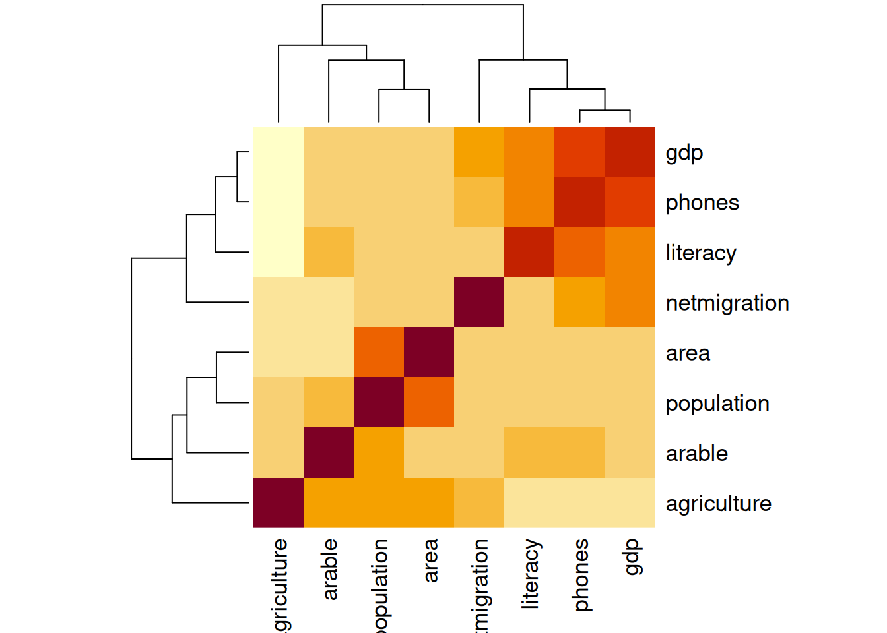

Korrelatsioonanalüüs on kõige sagedamini kasutatav mõõdik seose hindamiseks kahe arvtunnuse või harvemini järjestustunnuse vahel. Kui ühe tunnuse väärtuse suurenedes kipuvad teise tunnuse väärtused keskmiselt suurenema või vähenema, siis on nende tunnuste vahel korrelatsioon.
Selle korrelatsiooni suuna ja tugevuse saab arvutada ja esitada korrelatsioonikoefitsiendina. Kuigi selleks on erinevaid arvutuskäike, siis enamasti kasutatakse Pearsoni korrelatsioonikoefitsienti ja seda võib eeldada ka juhul, kui täpsustus arvutuskäigu kohta puudub.
Warning
Korrelatsioonikoefitsiendi väärtusel on kolm omadust, mille alusel saab teha järeldusi vastava tunnuste vahelise seose kohta:
selle väärtus on vahemikus -1 ja 1;
selle absoluutväärtus näitab seose tugevust, kus
väärtus 0 näitab seose puudumist ja
väärtus -1 või 1 näitab täielikku seost;
selle märk näitab seose suunda, kus
positiivne väärtus tähendab positiivset seost ehk ühe tunnuse väärtuste suurenedes suurenevad ka teise tunnuse väärtused,
negatiivne väärtus näitab negatiivset seost.
Hinnang korrelatsioonikordaja tugevusele oleneb konkreetsetest nähtustest, mida tunnused esindavad. Nt füüsikaliste nähtuste vahel on korrelatsioonikordajad tavaliselt kõrgemad kui ühiskondlike nähtuste puhul.
Üldiselt võib korrelatsioonikordaja alusel seose tugevuse hindamisel lähtuda sellest, et korrelatsioonikordaja
alla 0,2 näitab korrelatsiooni puudumist,
0,2 ja 0,5 vahel näitab mõõdukat korrelatsiooni,
üle 0,5 näitab tugevat korrelatsiooni.
Harva huvitab meid üksik korrelatsioonikordaja kahe tunnuse vahel. Enamasti soovime hinnata korraga seoseid mitme tunnuse või väga paljude tunnuste vahel. Üks korrelatsioonanalüüsi kasulik rakendus on korrelatsioonimaatriksid ja nende alusel loodud seosekaardid (heatmaps), mis näitlikustavad korraga kõiki ette antud korrelatsioone.
R keeles on korrelatsioonide leidmiseks funktsioon cor(), mis vaikimisi arvutab Pearsoni korrelatsioonikordaja.
Näeme, et nt kirjaoskuse ja sündimuse vahel on tugev negatiivne korrelatsioon ning rahvaarv korreleerub tugevalt ainult riigi pindalaga.
Korrelatsioonimaatriks ei pea olema sümmeetriline tunnuste suhtes, vaid ridades ja veergudes võivad olla ka erinevad tunnused.
Korrelatsioonimaatriksi kuvamiseks joonisena saame kasutada funktsiooni heatmap(). Vaikimisi järjestatkse tunnused selliselt, et sarnaste korrelatsioonidega tunnused oleksid lähestikku.
heatmap(korrelatsioonid)

Rohkem valikuid korrelatsioonimaartikis joonistamisel pakub funktsioon heatmap.2() laiendusest gplots. Lisaks legendile pakub see ka väga palju teisi võimalusi korrelatsioonide kuvamiseks.